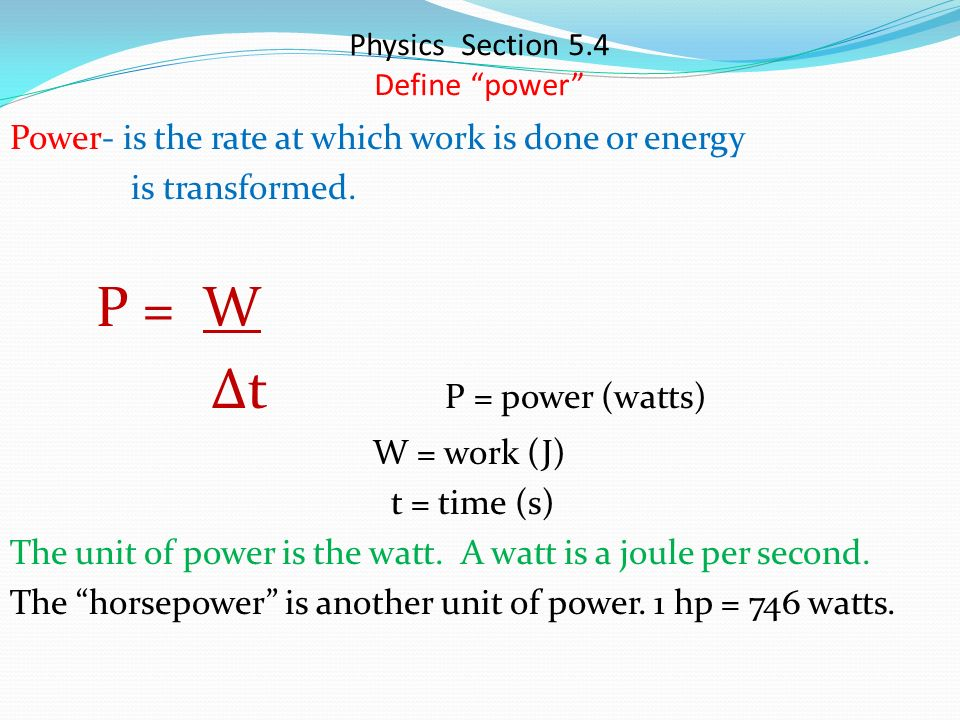

This contact causes an electrical current that consists of the transmission of negative charges (electrons) through a suitable material (such as metals) from the point of generation (and/or storage) to the point of consumption. Usually electrical energy is converted into other forms of energy: light, mechanical or thermal.


A scatter plot is a set of points plotted on a horizontal and vertical axes. Scatter plots are important in statistics because they can show the extent of correlation, if any, between the values of observed quantities or phenomena (called variables).

Linear regression is a data analysis technique that predicts the value of unknown data by using another related and known data value. It mathematically models the unknown or dependent variable and the known or independent variable as a linear equation.

Renewable energy is energy derived from natural sources that are replenished at a higher rate than they are consumed. Sunlight and wind, for example, are such sources that are constantly being replenished.